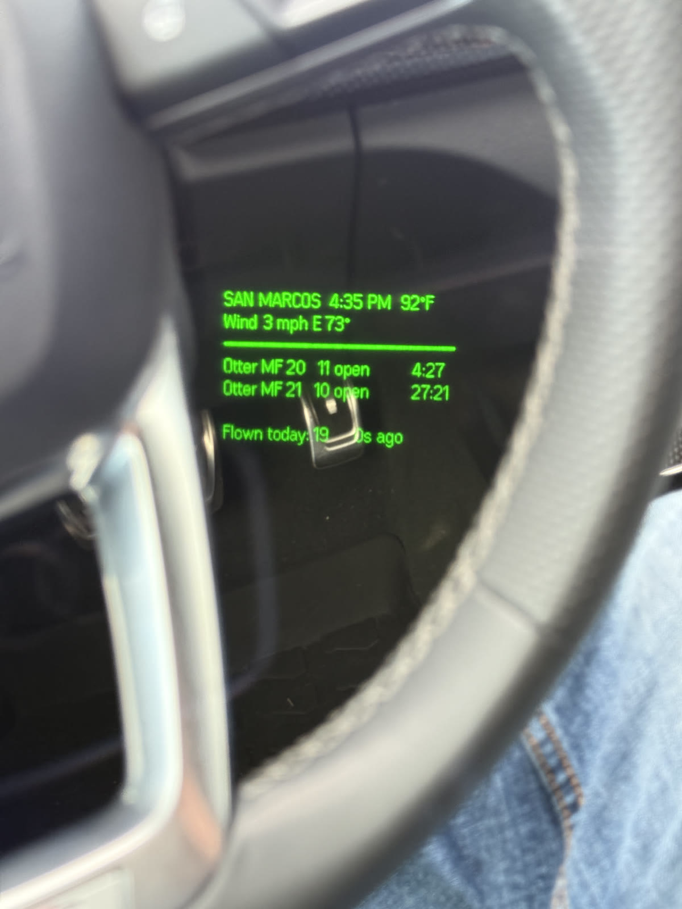
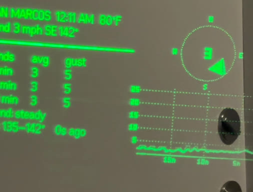
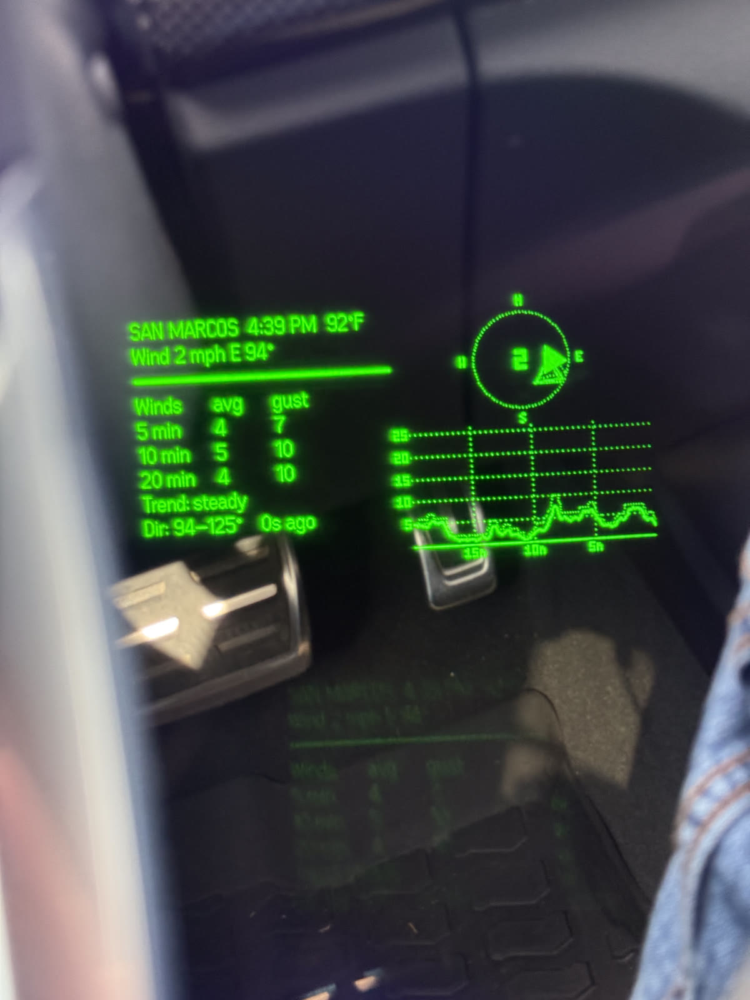

why
At the dropzone you live by the load clock: which load you're on, how many slots are open, how long until the plane leaves. Spaceland puts all of that on a TV and a web page — which means at the exact moment you're gearing up, checking it means digging out your phone with a rig on. I wear the glasses anyway. The clock should just be in them.

reverse-engineering the clock
There's no API, but the DZ's web clock has to get its data somehow. So the first file in this project was probe.cjs — a sniffing script that pretends to be the clock's own web page (same origin, same referer) and logs every packet that comes down. The answer: a socket.io v2 feed (it has to be v2 — the server speaks the old EIO=3 protocol) pushing live load data — load number, slots remaining, departure time, plane, status — plus a weather channel with wind speed, direction, and temperature. The status constants came from reading the clock's own frontend code; that's how you learn that HOLD is a 5.
Four dropzones are configured — san marcos, houston, dallas, clewiston — with coordinates borrowed from a community dropzone geojson.
winds aloft, done properly
The weather channel covers ground winds; jumpers also care what the air is doing on the way down. So the app pulls Open-Meteo's pressure-level forecasts from the surface up to ~18,000 ft and interpolates them to every 1,000 ft AGL — converting geopotential heights from MSL to AGL per-dropzone, since "12,000 ft" means something different over san marcos than over sea-level florida.
The detail i'm happiest with: wind direction is interpolated as u/v vectors, not degrees — so interpolating between 350° and 10° correctly passes through north instead of swinging 180° through south. And every fetch carries a 15-second abort timeout, because a hung weather request should never freeze the load board.
on the glasses
Everything renders to bitmaps for the monochrome display: the load list, a wind table with 5/10/20-minute averages and gusts, the trend, a compass, and a wind-history graph.


stack
- app
- Typescript + vite, ~660 lines. Even hub sdk, packed to an .ehpk and sideloaded, same pipeline as now-playing.
- data
- The DZ clock's socket.io v2 feed (reverse-engineered) + open-meteo pressure-level forecasts.
- status
- On my glasses at the DZ. Not on github yet — it currently exists on exactly one laptop, which is a problem i should fix.